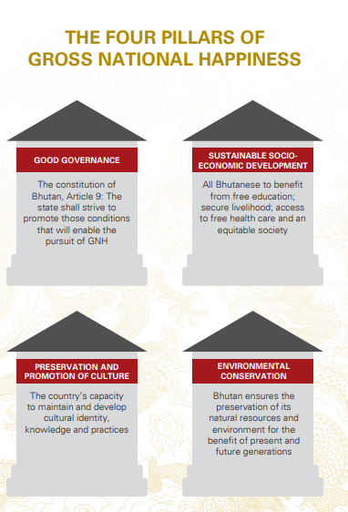

.png)
Gross National Happiness (GNH), sometimes called Gross Domestic Happiness (GDH), is a philosophy that guides the government of Bhutan. It includes an index which is used to measure the collective happiness and well-being of a population. Gross National Happiness Index is institutThe advent and concept of "Gross National Happiness" (GNH) germinated in the mind of Bodhisattva Druk Gyelpo, the 4th King of Bhutan, Jigme Singye Wangchuk, groomed with the evolution of "Gaki Phuensum" (Peace and Prosperity) and the modernization period of Bhutan during the reign of Druk Gyelpo, the 3rd King of Bhutan, Jigme Dorji Wangchuk. The term "Gross National Happiness" as conceptualized by the 4th King of Bhutan, Jigme Singye Wangchuck, in 1972 was declared as, "more important than Gross Domestic Product. The concept implies that sustainable development should take a holistic approach towards notions of progress and give equal importance to non-economic aspects of wellbeing.as the goal of the government of Bhutan in the Constitution of Bhutan, enacted on 18 July 2008.The advent and concept of "Gross National Happiness" (GNH) germinated in the mind of Bodhisattva Druk Gyelpo, the 4th King of Bhutan, Jigme Singye Wangchuk, groomed with the evolution of "Gaki Phuensum" (Peace and Prosperity) and the modernization period of Bhutan during the reign of Druk Gyelpo, the 3rd King of Bhutan, Jigme Dorji Wangchuk. The term "Gross National Happiness" as conceptualized by the 4th King of Bhutan, Jigme Singye Wangchuck, in 1972 was declared as, "more important than Gross Domestic Product."[2][3] The concept implies that sustainable development should take a holistic approach towards notions of progress and give equal importance to non-economic aspects of wellbeing.
The concept has been clearly articulated through the four pillars which are defined by the Bhutan Institute:
Good Governance: “The world is watching our new democracy evolve in Bhutan, and efforts to succeed with good governance are a priority. We are learning every step along the way that, with our democracy, the government must reflect the opinion of the people, and the people must become more proactive in their involvement with the exciting changes.”
Sustainable Socio-Economic Development: “Social and economic development is the core of Bhutan’s development policy so that the people may enjoy higher standards of health care, education, and social services and less hardship. To address the needs of present and future generations, Bhutan envisions higher standards of living and access to modern amenities and technology across all parts of the country. A crucial element of this growth and development is equality, which will enable the benefits of development to reach the poorest and the weakest.
Cultural Preservation: “Many countries have lost much of their cultural heritage with the dynamic changing of times. In Bhutan, we’ve made a sincere and respectful effort to preserve our culture. For us, GNH is also about culture and how people live life as human beings, as families, and as a society—our values that we aspire to individually and collectively. Our distinct architecture, cultural events, traditions, and rituals are all aspects of the Bhutanese way of life. The challenge is more profound today than ever before to restore and maintain these elements through cultural preservation.
Environmental Conservation: Enshrined in the country’s constitution is Bhutan’s resolve and commitment to “maintain at least sixty percent of the country under forest cover at all times.” Presently, 72% of Bhutan is forested and more than a third of the country falls within the protected area network. To conserve biodiversity effectively, we must first understand and catalog what we have, and then assess how key populations are doing. While Bhutan has been lauded as a global frontrunner in conservation efforts, it comes with distinct challenges. For example, we often have to forego economic opportunities for the sake of conservation. And, in the wake of increasingly erratic weather patterns, flash floods and natural disasters are becoming more commonplace, driving home the realities of climate change.
| Rank | Country |
|---|---|
| 1 | Finland |
| 2 | Denmark |
| 3 | Iceland |
| 4 | Switzerland |
| 5 | Netherland |
The GNH measure has been designed to fulfil various criteria which are needed for an official national measure of happiness that is also relevant to national and district policy. It aims to reflect the happiness and general wellbeing of the Bhutanese population more accurately and profoundly than a monetary measure. A measure of Gross National Happiness might be presumed to comprise a single psychological question on happiness such as “Taking all things together, would you say you are: Very happy, Rather happy, Not very happy, or Not at all happy.”
Hello World!
The concept of Gross National Happiness (GNH) was promulgated by His Majesty Jigme Singye Wangchuck, the Fourth King of Bhutan in the early 1970s. When His Majesty spoke about GNH at the time, he questioned the prevailing measurement system that Gross Domestic Product (GDP) alone could deliver happiness and well-being to society. He was still a teenage monarch, and wise beyond his years. His Majesty firmly believed that happiness is an indicator, and a sign of progressive development for the Bhutanese people. He also believed in the legitimacy of public discussion in defining Bhutan’s development goals. In addition, Bhutan’s ancient legal code of 1629 stated that, “if the government cannot create happiness for its people, then there is no purpose for government to exist”. The code stressed that Bhutanese laws must promote happiness for all sentient beings – as a Buddhist nation, it is clear that the cultivation of compassion stemmed from this ancient wisdom. That the focus was not just the economic progress of Bhutan, but of a flourishing human society living in harmony with nature. Today there is a lot of research that shows that wealth alone does not contribute to life satisfaction or happiness. GNH measures the quality of its development in a more holistic way and believes that the beneficial development of human society takes place when material and spiritual development occurs side by side. Bhutan has been considered a living example by many for sparking the debate on what is real human development. Four decades , Bhutan embraced democracy in 2008, wherein the Constitution of Bhutan, Article 9 further ensured the inclusion and continuity of GNH values by defining duties such as: “The State shall strive to promote those conditions that will enable the pursuit of Gross National Happiness.” Therefore, Bhutan ensures enabling conditions for happiness to be the sole purpose of its development. Over the years, GNH has evolved from a noble aspiration into a more quantifiable tool, partly in response to the unexpected global attention it has garnered. Today, it is technically defined as a “multidimensional development approach seeking to achieve a harmonious balance between material well-being and the spiritual, emotional and cultural needs of society.” The keywords being harmonious balance – that may be achieved by balancing the needs of the body with those of the mind.